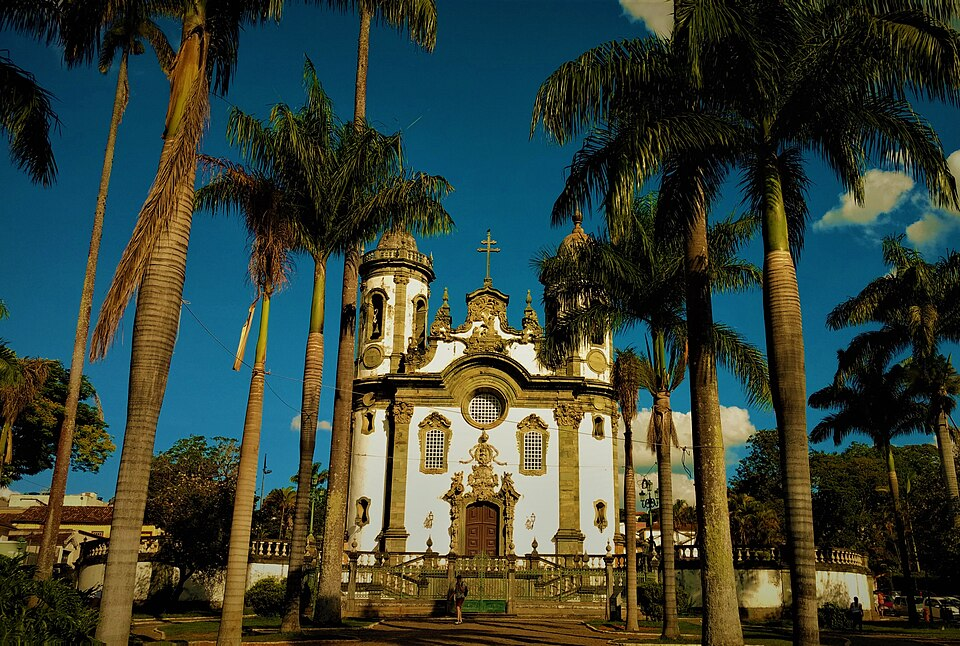
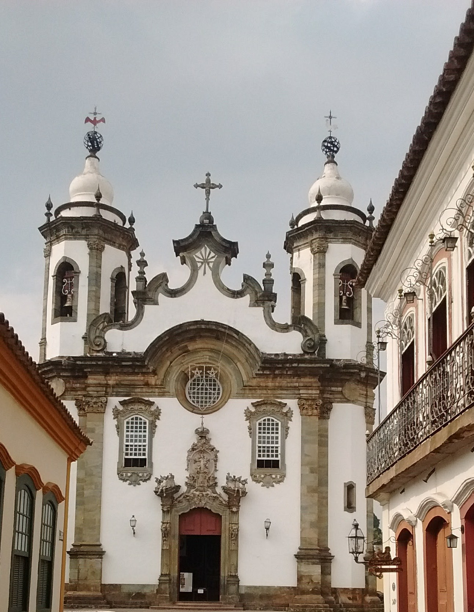

São João del-Rei nasceu em 1704 com a descoberta de ouro na Serra do Lenheiro, após Tomé Portes criar uma travessia no Rio das Mortes. Palco da Guerra dos Emboabas, foi elevada a vila em 1713 sob o nome atual. Graças ao seu papel como forte entreposto comercial, a cidade prosperou além da mineração e quase se tornou a capital do Brasil nos planos da Inconfidência Mineira. Em 1838 virou cidade e, em 1881, ganhou a famosa Estrada de Ferro Oeste de Minas. Hoje, é um patrimônio vivo conhecido internacionalmente pela tradição secular do toque dos sinos e seu preservado conjunto barroco.

igreja de nossa senhora do carmo
A Igreja de Nossa Senhora do Carmo, localizada em São João del-Rei, é um exemplo notável da arquitetura barroca brasileira. Construída no século XVIII, a igreja apresenta uma fachada imponente e detalhes ornamentais que refletem a riqueza cultural da época. Seu interior é adornado com altares elaborados, pinturas e esculturas que encantam os visitantes. Além de seu valor histórico e artístico, a igreja desempenha um papel importante na vida religiosa da comunidade local, sendo palco de celebrações e eventos religiosos ao longo do ano.

Dicas para visitar São João del Rei
Para visitar São João del Rei, concentre seu roteiro no Centro Histórico, que pode ser facilmente explorado a pé. As duas principais atrações são a Igreja de São Francisco de Assis, uma joia do barroco projetada por Aleijadinho, e o famoso passeio de Maria Fumaça até a vizinha Tiradentes, cujo bilhete já dá direito a conhecer o Museu Ferroviário na estação de partida. Caminhando pelas ruas de pedra, não deixe de cruzar a histórica Ponte da Cadeia, visitar a Catedral do Pilar e fotografar a charmosa Rua das Casas Tortas. Para a logística da viagem, a dica de ouro é usar tênis confortável devido ao calçamento irregular e evitar as segundas-feiras, dia em que a maioria dos museus fecha. Na hora de comer, aposte na culinária artesanal do Taberna d'Omar ou na tradicional fartura mineira do Restaurante Trilhos de Minas Colônia.